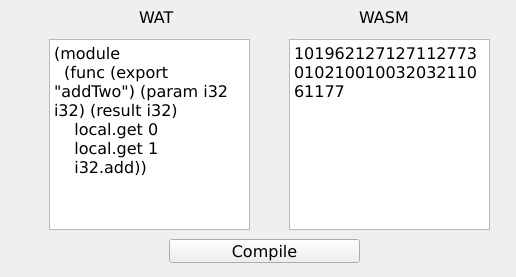

The Worker
Last edit: May 29, 2022
Introduction
The previous blog posts all went in on the compiler from wat to wasm and a vm to run it. This post features how this can be used to run in the browser.
Compiling
First of all is the compilation of the program. For this we don't use the ISO cpp compilers to compile to your native machine. No we use a webassembly compiler named emscripten.
Hold on a second, did you hear this correctly? Did you just hear compile a webassembly compiler with a webassembly compiler? If you had this feeling when i mentioned it that means you got it. We do in fact compile our webassembly compiler to webassembly. The compiler itself can nowadays be added to various diffrent IDE's. This makes our life easier. The compiled project can be runned in the web browser. Now, to make the project a bit better to use a UI was created to support this. This UI simply contains two text fields. one for the input (WAT) and one with the output (WASM). The compilation is started by pressing a button that says compile. The UI itself was created through the use of QT .
Making the program available online
Now that the program is succesfully compiled we can host the application in a few ways, one would be with cloudflare workers, another way is to take the application with the newly made UI and host it through github pages. This approach was taken as it is easier to get the program up and running. the final result can be found here.
As a final note: emscripten doesn't take features from C++17 such as the previously seen variant well, for this reason it was replaced within the code.